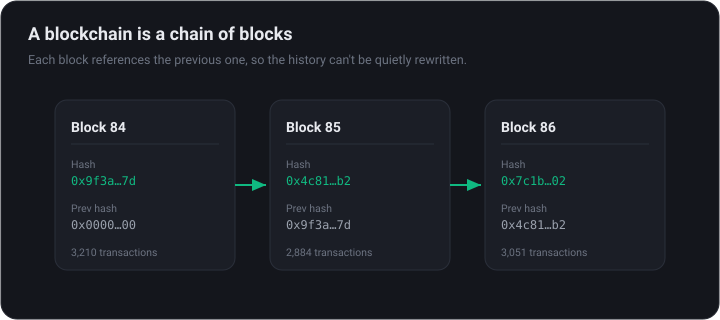
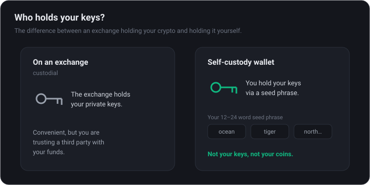

Crypto: Zero to Your First Trade
Everything a complete beginner needs to buy their first crypto safely — what you are actually buying, how to pick and secure an exchange, how to place your first order, and how to hold it yourself.
What you're actually buying
Cryptocurrencies are digital assets that live on a blockchain — a shared, public ledger maintained by thousands of computers instead of a single bank. No one can quietly edit the history, and anyone can verify it.

Bitcoin (BTC) is the original: a fixed-supply asset many treat as digital gold. Ethereum (ETH) is a programmable network that powers most of the apps, tokens, and DeFi you will hear about. Almost everything else is a more experimental bet.
Why does any of this exist? Crypto was built to let people hold and move value without trusting a bank or government to do it for them. That independence is the appeal — and the responsibility, because with no middleman there is also no one to reverse a mistake or refund a scam.
Crypto is volatile — double-digit daily swings are normal. Only commit money you can afford to lose, and expect a learning curve before you risk size.
Rule of thumb: if you can't explain in one sentence what a coin does, you're speculating, not investing.
The crypto landscape: coins, tokens & stablecoins
Beyond Bitcoin and Ethereum, the word crypto covers several very different things wearing one label. Knowing which bucket an asset sits in tells you most of what you need to know about its risk.
- Store-of-value coins — Bitcoin is the archetype: a capped supply, no central issuer, widely treated as digital gold.
- Smart-contract platforms (Layer 1s) — Ethereum, Solana and peers run the apps and tokens; their coins pay for usage, known as gas.
- Layer 2s — networks built on top of a Layer 1 to make transactions faster and cheaper.
- DeFi & app tokens — a stake in a specific protocol such as an exchange or lending market.
- Stablecoins — tokens pegged to a currency, usually the US dollar (USDT, USDC). They are how most people hold value and move between trades.
- Memecoins & NFTs — driven mostly by attention and speculation. Highest risk, and where most beginners lose money.
A rough risk ladder runs from Bitcoin at the top, down through large platforms, then established apps, and finally micro-cap tokens and memecoins at the bottom. The further down you go, the more the price depends on hype rather than real usage.
Match the asset to your intent. Holding Bitcoin for years and gambling on a memecoin are completely different activities — never let one risk budget quietly fund the other.
Choosing an exchange
An exchange is where you convert cash into crypto. Custodial exchanges (the easy on-ramp) hold the assets for you, like a brokerage. What matters most when you pick one:
- Security & track record — how long it has operated, whether it has had breaches, and what protections it offers.
- Regulation in your country — a licensed, compliant exchange is far safer for fiat deposits.
- Fees — spreads and trading fees vary widely; the "free" convenience apps are often the most expensive.
- Supported coins & payment methods — make sure it covers what you want and your local currency.
For most beginners, start with a large, reputable exchange and graduate later. Three solid options:
Centralized exchanges vs. DEXs
There are two fundamentally different places to trade, and it helps to know both even if you only use one at first. A centralized exchange (CEX) is a company — like Coinbase or Binance — that holds your funds and matches orders for you. A decentralized exchange (DEX) is a set of smart contracts you trade against directly from your own wallet, with no company in the middle.
- Custody — a CEX holds your coins; on a DEX you keep them in your own wallet until the moment you trade.
- Access — a CEX needs sign-up and ID (KYC); a DEX just needs a wallet, with no account and no permission.
- Fiat — only a CEX lets you turn cash into crypto. DEXs trade crypto-for-crypto only.
- Risk — a CEX can be hacked, freeze withdrawals, or go bankrupt; a DEX exposes you to smart-contract bugs and scam tokens instead.
The practical path for almost everyone: buy your first crypto on a reputable CEX, then — once you understand wallets and gas — explore DEXs for tokens a CEX does not list. On a DEX you are the last line of defence; there is no support desk.
Most brand-new tokens only trade on DEXs, and that is exactly where scams concentrate. Anyone can create a token and a trading pair. Never connect your main wallet to an unfamiliar site.
The true cost: fees, spreads & slippage
The headline "0% commission" you see in flashy apps is almost never the real price. Exchanges and brokers make money in ways that are easy to miss, and those costs compound every time you trade.
- Trading fees — usually a small percentage per trade. Maker fees (you add liquidity with a limit order) are typically lower than taker fees (you remove it with a market order).
- The spread — the gap between the buy and sell price. Convenience apps often widen the spread instead of charging a visible fee, so a "free" trade can quietly cost 1–2%.
- Deposit & withdrawal fees — moving fiat or crypto in and out can carry a charge; debit-card purchases are especially expensive.
- Network (gas) fees — paid to the blockchain, not the exchange, whenever you move crypto on-chain.
- Slippage — on thin markets a large order pushes the price against you before it fills.
Fees feel trivial on a single trade and brutal over a year of active trading. A 1.5% all-in cost on every round trip means a strategy must clear roughly 3% just to break even.
Favour limit orders over market orders, fund with bank transfers rather than cards, and judge the all-in price including the spread — not just the advertised commission.
Set up your account safely
Security is the part beginners skip and regret. Before you deposit a cent:
- Use a strong, unique password and a real email you control.
- Turn on two-factor authentication (2FA) — use an authenticator app or hardware key, not SMS, which can be SIM-swapped.
- Complete KYC (ID verification) — legitimate exchanges require it, and it protects your ability to withdraw.
- Enable a withdrawal address whitelist and anti-phishing code if offered.
No exchange, influencer, or 'support agent' will ever message you asking for your password, 2FA code, or seed phrase. Anyone who does is a scammer.
Make your first purchase
Fund your account (bank transfer is usually cheapest), then place an order. Two basic order types:
- Market order — buys instantly at the current price. Simple, but you pay the spread.
- Limit order — buys only at a price you set. Slightly more effort, usually cheaper.
You don't have to buy a whole coin — you can buy a fraction (e.g., $50 of BTC). A popular beginner approach is dollar-cost averaging (DCA): buying a fixed amount on a schedule so you are not betting everything on one day's price.
Before deciding what to buy, check independent data on the asset — market cap, history, and whether it is a serious project.
Sizing up a coin before you buy
A low price per coin does not mean an asset is cheap. A $0.01 token can be wildly overvalued and a $40,000 coin can still be early. What matters is the market capitalisation — price multiplied by the coins in circulation.
- Market cap — the market's total valuation of the project, and the honest gauge of size.
- Circulating vs total vs max supply — how many coins exist now, in total, and at most. A small float beside a huge total supply means heavy future dilution.
- Fully diluted valuation (FDV) — what the market cap would be if every coin were circulating. A small market cap next to a giant FDV is a warning.
- Volume & liquidity — how much trades each day and how deep the order book is. Thin liquidity means you can get stuck in a position.
- Token unlocks & vesting — scheduled releases to insiders and early investors that can flood the market with fresh supply.
Before buying anything beyond the majors, spend ten minutes on four questions: what does it do, who holds it, how is new supply released, and is anyone actually using it?
A coin that has run up on a tiny circulating supply with a large unlock approaching is a classic way beginners become exit liquidity. Always check the unlock schedule first.
Hold it yourself: wallets & self-custody
On an exchange, they hold your keys — convenient, but you are trusting them. The crypto maxim is 'not your keys, not your coins.' For meaningful amounts, move to a self-custody wallet.
- Hot wallets (software apps or browser extensions) — convenient, connected to the internet, fine for small or active funds.
- Cold wallets (hardware devices) — offline, the gold standard for larger holdings.

Every wallet gives you a seed phrase (12–24 words). It is your money. Write it on paper, store it offline, never type it into a website, and never photograph it. Lose it and the funds are gone; leak it and they are stolen.
When you withdraw from an exchange to your wallet, you can verify the transaction landed on a public block explorer.
Networks, gas & sending crypto safely
Crypto lives on different networks (blockchains), and every transaction pays a small fee to that network — the gas. When you move coins between an exchange and a wallet you choose which network to send over, and getting it wrong can mean losing the funds.
- Pick the matching network — the same asset can exist on several chains (for example USDC on Ethereum, Solana or Base). The sending and receiving side must use the same network.
- Mind the gas — Ethereum fees rise when the network is busy; layer-2s and other chains are far cheaper. Check the fee before you confirm.
- Watch for a memo or destination tag — some assets and exchange deposits require one. Skip it and the funds can be lost.
- Transactions are irreversible — there is no chargeback and no support line that can claw a transfer back. The blockchain does exactly what you told it to.
The habit that saves people: always send a small test amount first, confirm it arrives, and only then move the rest.
Sending an asset over the wrong network, or to an exchange that does not support that network, is the single most common way self-custody beginners lose money. Slow down for transfers.
Records, taxes & staying organised
Crypto feels lawless, but in most countries the tax authority disagrees. Selling, swapping one coin for another, and even spending crypto can all be taxable events — and exchanges increasingly report to regulators. Good habits from day one save a painful scramble later.
- A sale is taxable — converting crypto back to cash usually realises a gain or loss against what you paid.
- A swap is usually a sale too — trading BTC for ETH is, in many places, treated as selling the BTC. People are caught out by this constantly.
- Holding is not taxable — simply buying and holding generally is not taxed until you dispose of the asset.
- Rewards are income — staking rewards, airdrops and interest are often taxed as income at the moment you receive them.
The single best habit is to keep a simple log of every buy, sell and transfer: date, asset, amount, price and fee. Most exchanges let you export this, and portfolio trackers can stitch it together across wallets.
Tax rules vary widely by country and change often. This is general education, not tax advice — check your local rules or a professional for your own situation.
Your first game plan: DCA, sizing & an exit
Most beginners lose money not because they pick the wrong coin but because they have no plan. A few rules written down beforehand remove the emotion when prices swing.
- Decide a total budget you can afford to lose, kept separate from your emergency fund and bills.
- Buy in tranches with dollar-cost averaging — a fixed amount on a schedule — instead of going all-in on one day.
- Size each position so a 50% drop would be uncomfortable, not life-changing.
- Decide in advance what would make you take profit or cut losses, and write it down.
- Keep simple records of what you bought, when and why — you will need them for review and for tax.
A boring, mechanical plan you actually follow beats a brilliant strategy you abandon the moment the market moves. Discipline is the edge most people never build.
Avoid the beginner traps
- Scams & 'guaranteed returns' — giveaways, romance schemes, and fake support are everywhere. If it sounds too good, it is.
- FOMO buying — chasing a coin that is already up 300% is how most people lose money. Have a plan before you click.
- Ignoring taxes — in most countries, selling or swapping crypto is a taxable event. Keep records.
- Position sizing — never put in rent money. Size positions so a −50% week does not hurt your life.
Crypto rewards patience and skepticism far more than speed. Start small, verify everything, and let competence compound.
Nothing here is financial advice — it is education. Always do your own research.